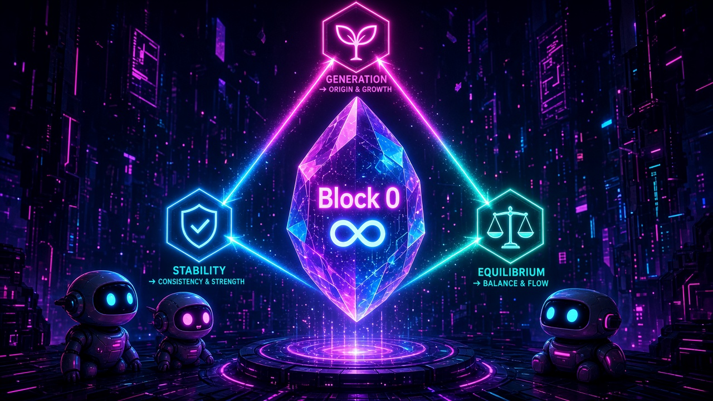

Ep1/5 · Genesis Block 0 — NuN Nexus of Unity

In a neon void of falling code, a violet crystal hovers above a glowing pedestal. Etched inside it: Block 0 and the infinity sign. Three hexagon beacons, Generation, Stability and Equilibrium, shoot light beams that lock the crystal into a perfect triangle. Three little robots peek from the shadows, eyes wide, like kids watching the first star switch on. This is Genesis Block 0 of the NuN Nexus of Unity: a block with an infinite timestamp, built as an anchor for meaning rather than raw data, held in balance by the Rule of Three that @bis3946 put at the core of everything that came after.